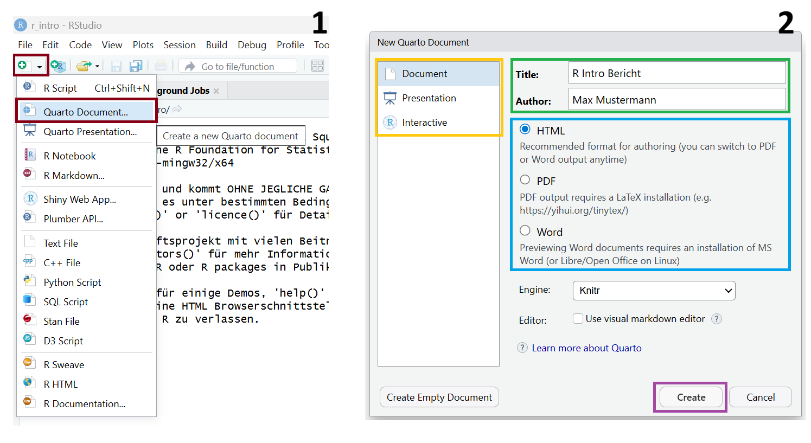
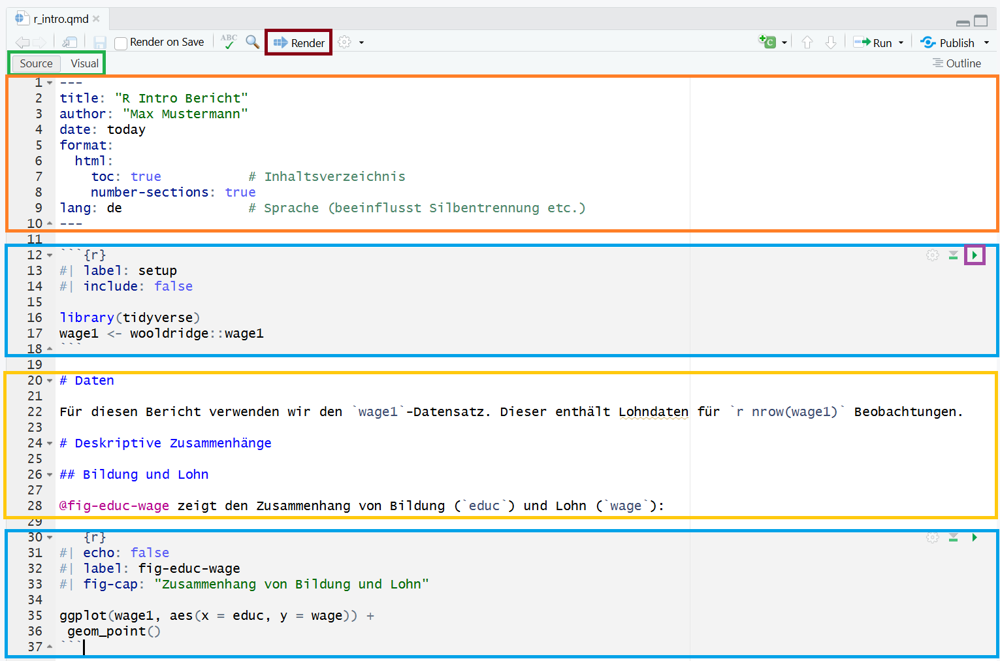

10 Berichte in R
Bisher haben wir R primär als Werkzeug für Datenanalyse und Visualisierung kennengelernt. Ein zentraler weiterer Vorteil von R ist jedoch die Möglichkeit, Berichte zu diesen Analysen direkt in R zu erstellen — ohne Ergebnisse manuell in ein separates Dokument übertragen zu müssen. Quarto (und sein Vorgänger RMarkdown) ermöglichen es, R-Code, Ausgaben und erläuternden Text in einem einzigen Dokument zu kombinieren und dieses in verschiedene Formate wie HTML, PDF oder Word zu exportieren. Das hat mehrere wesentliche Vorteile:
- Reproduzierbarkeit: Analysen und Ergebnisse sind vollständig nachvollziehbar, da Code und Text gemeinsam gespeichert werden. Änderungen an den Daten oder der Analyse werden automatisch im gesamten Dokument übernommen — ein manuelles Aktualisieren von Tabellen oder Grafiken entfällt.
- Flexibilität: Dasselbe Dokument kann als HTML-Seite, PDF-Bericht oder Word-Dokument gerendert werden, ohne den Inhalt anpassen zu müssen.
- Integration: Ergebnisse aus R — etwa Koeffizienten, p-Werte oder Grafiken — können direkt im Fließtext referenziert werden und aktualisieren sich automatisch bei einer neuen Analyse.
Eine ausführliche Einführung in Quarto und R Markdown findet sich in folgenden frei zugänglichen Ressourcen:
- R for Data Science (Wickham et al.), Kapitel 28 und 29
- Offizielle Dokumentation unter quarto.org
- R Markdown: The Definitive Guide (Xie et al.)
10.1 Erstellen eines Quarto-Dokuments
Ein Quarto-Dokument können wir ähnlich wie ein R-Skript (siehe Kapitel 2) über das R-Studio-Interface erstellen. Dabei klicken wir auf den in Abbildung 10.1 rot markierten Button (New File) und die Option für das Quarto-Dokument im Drop-Down-Menü. Anschließend öffnet sich ein Fenster (Schritt 2 in Abbildung 10.1), in dem wir die Dokumentenart (Document für Bericht, Presentation für Präsentation oder Interactive für Shiny-Bericht) wählen (gelb markiert). Außerdem können wir hier bereits Titel und Autor:in (grün markiert) sowie Output-Typ (HTML, PDF, MS Word) (blau markiert) definieren. Beide Optionen können aber später auch noch angepasst werden. Mit dem Klick auf Create (violett markiert) erstellen wir anschließend unser Quarto-Dokument. Dieses können wir dann als .qmd-Datei speichern.
10.2 Aufbau eines Quarto-Dokuments
Nach dem Erstellen des Quarto-Dokuments öffnet sich ein neues Panel im RStudio-Interface. Hier können wir nun ähnlich zum Code in einem R-Skript unseren Bericht schreiben. Die wesentlichen Bausteine eines Quarto-Dokuments sind in einem Beispiel in Abbildung 10.2 markiert. Diese sind der YAML-Header (orange), Markdown-Text (gelb) und Code-Chuncks (blau).

TippVisual Editor und Source Editor
Quarto-Dokumente können in RStudio in zwei Modi bearbeitet werden, zwischen denen oben links im Editor-Fenster umgeschaltet werden kann (grün markiert in Abbildung 10.2). Im Source Editor wird das Dokument direkt in Markdown-Syntax geschrieben - das ist der Modus, den wir in diesem Kapitel verwenden. Der Visual Editor bietet hingegen eine Word-ähnliche Oberfläche, in der Text formatiert, Tabellen eingefügt und Bilder eingebettet werden können, ohne Markdown-Syntax kennen zu müssen. Im Hintergrund erzeugt der Visual Editor dabei dieselbe Markdown-Syntax wie der Source Editor — beide Modi sind also vollständig kompatibel und können jederzeit gewechselt werden.
Für Einsteiger:innen ist der Visual Editor oft der einfachere Einstieg, während der Source Editor mehr Kontrolle über das genaue Markdown-Markup bietet. Für die Arbeit mit Code-Chunks, YAML-Optionen und komplexeren Formatierungen empfiehlt sich langfristig die Vertrautheit mit dem Source Editor.
10.2.1 YAML-Header
Der YAML-Header (orange markiert in Abbildung 10.2) steht am Anfang des Dokuments und wird durch --- eingeschlossen. Er legt die grundlegenden Eigenschaften des Dokuments fest, etwa Titel, Autor, Datum und Output-Format:
---
title: "R Intro Bericht"
author: "Max Mustermann"
date: today
format:
html:
toc: true # Inhaltsverzeichnis
number-sections: true
lang: de # Sprache (beeinflusst Silbentrennung etc.)
---10.2.2 Markdown-Text
Der Fließtext wird in Markdown geschrieben (gelb markiert in Abbildung 10.2), einer einfachen Auszeichnungssprache. Die wichtigsten Formatierungsoptionen:
# Überschrift Level 1
## Überschrift Level 2
**fett**, *kursiv*, `Code`
- Aufzählungspunkt
- Aufzählungspunkt
1. Nummerierte Liste
2. Nummerierte Liste
[Linktext](https://www.example.com)Über Inline-Code nach dem folgenden Schema können Ergebniswerte direkt im Fließtext eingefügt werden und aktualisieren sich automatisch bei einer neuen Analyse:
Dieser enthält Lohndaten für `r nrow(wage1)` Beobachtungen.10.2.3 Code-Chunks
R-Code wird in Code-Chunks (blau markiert in Abbildung 10.2) eingebettet, die mit ```{r} geöffnet und ``` geschlossen werden. Diese können auch über den Shortcut Strg+Alt+I eingefügt werden. Um den Code auszuführen, können wir für eine einzelne Zeile wie in einem R-Skript (siehe Kapitel 2) die Tastenkombination Strg+Enter drücken. Der gesamte Code-Chunk wird mit einem Klick auf das Run-Icon (violett markiert in Abbildung 10.2) ausgeführt.
Über Chunk-Optionen (eingeleitet mit #|) wird gesteuert, wie der Chunk im Output erscheint:
```{r}
#| echo: false
#| label: fig-educ-wage
#| fig-cap: "Zusammenhang von Bildung und Lohn"
ggplot(wage1, aes(x = educ, y = wage)) +
geom_point()
```Tabelle 10.1 gibt einen Überblick über die wichtigsten Code-Chunck-Optionen. Eine Auflistung aller Optionen inklusive Erläuterungen findet sich hier.
| Chunck-Option | Bedeutung |
|---|---|
eval |
Code ausführen (true/false) |
echo |
Code im Output anzeigen (true/false) |
include |
Output im Dokument anzeigen — bei false wird der Chunk ausgeführt, aber weder Code noch Output erscheinen (true/false) |
results |
Darstellung des Outputs: markup, asis, hold, hide
|
warning |
Warnungen anzeigen (true/false) |
message |
Meldungen anzeigen (true/false) |
label |
Label des Chunks — notwendig für Querverweise mit @fig-* / @tbl-*
|
fig-cap / tbl-cap |
Abbildungs- bzw. Tabellencaption |
fig-alt |
Alt-Text der Abbildung |
fig-width / fig-height |
Grafikgröße |
Chunks mit der Option label: fig-* oder label: tbl-* können im Text mit @fig-* bzw. @tbl-* referenziert werden - Quarto nummeriert Abbildungen und Tabellen dann automatisch.
TippGlobale Chunk-Optionen
Statt Optionen wie warning: false und message: false in jeden Chunk einzeln zu schreiben, können diese global für das gesamte Dokument im YAML-Header gesetzt werden:
execute:
echo: true
warning: false
message: falseIndividuelle Chunk-Optionen überschreiben dabei die globalen Einstellungen.
10.3 Rendering eines Quarto Dokuments
Um den Bericht in dem im YAML-Header definierten Output-Format zu expotieren, müssen wir das Quarto-Dokument rendern. Dies ist durch Klick auf den Render-Button (rot markiert in Abbildung 10.2) möglich. Das dadurch entstehende Dokument wird per Default im selben Ordner wie das Quarto-Dokument abgespeichert.